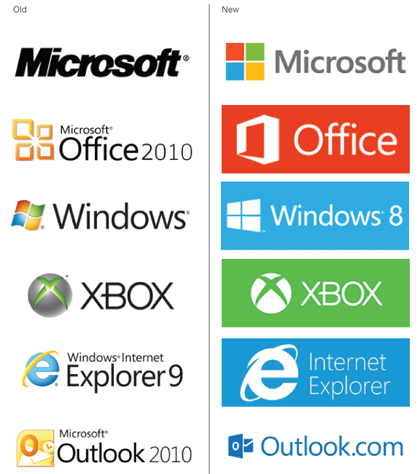

História da Microsoft
A Microsoft foi fundada por Bill Gates e Paul Allen em 1975 nos Estados Unidos. O primeiro produto desenvolvido pela empresa foi uma versão do interpretador BASIC, para o computador Altair 8800 da MITS. Em 1979, a IBM procura um sistema operacional para seu novo computador e contrata a Microsoft para o serviço. Em 1976 é lançado o Microsoft FORTRAN, para computadores baseados em CP/M. A empresa entrou no ramo de sistemas operacionais em 1980 com sua própria versão do Unix, chamada Xenix, A história do Windows começou em 1981, antes mesmo do lançamento do Apple Lisa, mas o produto chega ao mercado somente em 1985 com o nome de Windows 1.0. Apesar das limitações, o primeiro projeto de sistema operacional da Microsoft trouxe para o usuário doméstico o acessório mouse e a possibilidade do uso de mais de um programa ao mesmo tempo (recurso multitarefa) e uma interface colorida, com ícones e janelas. Apresentava alguns aplicativos: jogo reversi, calendário, bloco de notas, calculadora, relógio, Paint, e outros.
O segundo membro da família — Windows 2.0 — surgiu em 1987, mesmo ano em que a empresa compra o PowerPoint e a planilha Excel. A Internet se popularizou com o Mosaic da NCSA em 1993, e não demorou muito para que surgissem outros navegadores.
Já entre seus principais produtos de hardware modernos estão os consoles de videogame Xbox, hardware (teclados, mouses, etc.) e de players portáteis (Zune), a série de tablets Surface e os smartphones Microsoft Lumia. Outro ponto de destaque da empresa no setor de produtos foi em 2013, quando a Microsoft comprou a divisão de dispositivos e serviços da empresa finlandesa Nokia.